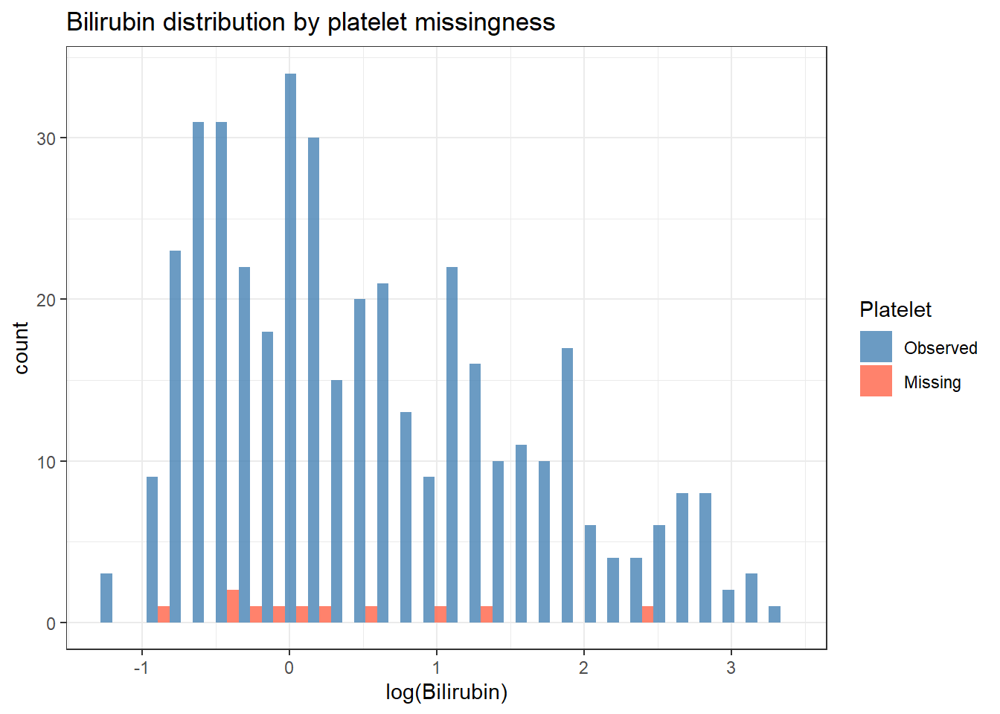

Your dataset has missing values. Simply dropping incomplete cases loses statistical power � and if the data are not missing at random, dropping them biases your estimates in ways that are difficult to detect. Missing data methods let you use all available information and make your assumptions about missingness explicit. For example: if sicker patients are more likely to have missing lab values, a complete-case analysis systematically excludes the most severely ill and distorts every downstream estimate.
21.2 Learning Objectives
After completing this session you will be able to:
Classify missing data as MCAR, MAR, or MNAR and explain why the distinction matters
Explore missingness patterns and assess whether missingness is related to other variables
Implement complete-case analysis and explain when it is valid
Perform multiple imputation with mice and combine results using Rubin’s rules
Report imputed analyses correctly in a manuscript
21.3 Background: Why Missing Data Matter
21.3.1 Three Mechanisms
Mechanism
Definition
Implication
MCAR ? Missing Completely At Random
Probability of missing is unrelated to any variable
Complete-case analysis is unbiased
MAR ? Missing At Random
Probability of missing depends on observed variables, not on the missing value itself
Multiple imputation is valid; complete-case is biased
MNAR ? Missing Not At Random
Probability of missing depends on the unobserved missing value itself
Neither complete-case nor simple imputation is valid; sensitivity analysis required
Example: Patients with high bilirubin are less likely to have platelet counts recorded (perhaps because they were too ill). Missingness depends on observed bilirubin ? MAR. Imputation conditioned on bilirubin will recover unbiased estimates.
21.3.2 Why Not Just Drop Missing Rows?
Complete-case analysis: - Reduces sample size ? loss of power - Is biased under MAR or MNAR - Implicitly assumes MCAR
21.3.3 Multiple Imputation Overview
Multiple imputation (MI) replaces each missing value with \(m\) plausible draws from the conditional distribution of the missing variable given the observed data. This produces \(m\) complete datasets. Each is analysed separately and results are combined using Rubin’s rules, which pool point estimates and propagate the extra uncertainty due to imputation into the standard errors.
# Is missingness in platelet related to bilirubin?pbc %>%mutate(platelet_missing =is.na(platelet)) %>%ggplot(aes(x =log(bili), fill = platelet_missing)) +geom_histogram(position ="dodge", bins =30, alpha =0.8) +scale_fill_manual(values =c("steelblue", "tomato"),labels =c("Observed", "Missing")) +labs(title ="Bilirubin distribution by platelet missingness",x ="log(Bilirubin)", fill ="Platelet") +theme_bw()

If the distributions differ, missingness is related to bilirubin ? consistent with MAR rather than MCAR.
21.4.2 Little’s MCAR Test
# Formal test: if p < 0.05, data are not MCARmcar_test(pbc %>%select(albumin, bili, platelet, protime, chol))
# Fit the model in each imputed dataset and pool with Rubin's rulesfit_mi <-with(imp, lm(albumin ~ log_bili + platelet + stage))pooled <-pool(fit_mi)summary(pooled, conf.int =TRUE) %>%select(term, estimate, `2.5 %`, `97.5 %`, p.value)
If the estimates differ substantially, the missing data were not MCAR and complete-case analysis was biased.
21.5 Example 2: Animal Data (palmerpenguins)
library(palmerpenguins)
Warning: package 'palmerpenguins' was built under R version 4.3.3
# penguins has a small amount of missing datapenguins %>%summarise(across(everything(), ~sum(is.na(.)))) %>%pivot_longer(everything()) %>%filter(value >0)
# A tibble: 5 × 2
name value
<chr> <int>
1 bill_length_mm 2
2 bill_depth_mm 2
3 flipper_length_mm 2
4 body_mass_g 2
5 sex 11
# Impute the missing values in penguinspeng_imp <- penguins %>%select(body_mass_g, flipper_length_mm, bill_length_mm, bill_depth_mm, species, sex) %>%mutate(species =factor(species), sex =factor(sex))set.seed(2024)imp_peng <-mice(peng_imp, m =5, method ="pmm", printFlag =FALSE)# Analyse: predict body mass from flipper length and speciesfit_peng <-with(imp_peng, lm(body_mass_g ~ flipper_length_mm + species))summary(pool(fit_peng), conf.int =TRUE)
survival::pbc: Real-world clinical data with informative missingness in laboratory values ? a classic MI teaching example.
palmerpenguins: Minimal missingness; useful to practice the workflow without bias concerns.
NHANES (via the NHANES or nhanesA packages): Large survey with complex, realistic missingness patterns across demographic and clinical variables.
21.7 What Can Go Wrong
Imputing the outcome Never include the outcome variable as a predictor in the imputation model if missingness in the outcome is not informative. If the outcome is partially missing, imputing it is only valid under strict assumptions. Report the proportion of missing outcomes and conduct a sensitivity analysis.
Too few imputed datasets The rule of thumb is \(m \geq\) the percentage of missing data (e.g., 20% missing ? \(m \geq 20\)). Five imputations is typically insufficient when missingness is substantial.
Using complete-case AIC to select variables before imputing Model selection should be done within the multiply-imputed framework, not on complete cases only. Selecting variables on complete cases and then imputing introduces bias.
MNAR without sensitivity analysis If you have reason to believe data are MNAR (e.g., lab values missing because the patient refused due to anxiety about results), standard MI is not sufficient. Perform a sensitivity analysis under plausible MNAR scenarios using mice with a delta adjustment or the missingHE package.
Count the proportion of missing values for each variable in survival::pbc.
Visualise the missingness pattern for platelet, chol, trig, and copper.
Test whether missingness in platelet is associated with bili (logistic regression: is.na(platelet) ~ log(bili)). What does a significant result tell you?
# Test association between missingness and bilirubinpbc %>%mutate(platelet_miss =as.integer(is.na(platelet))) %>%glm(platelet_miss ~log(bili), data = ., family = binomial) %>% broom::tidy(conf.int =TRUE, exponentiate =TRUE)
In your own dataset, identify variables with missing data. Determine whether the missing mechanism is likely MCAR, MAR, or MNAR (document your reasoning). Perform multiple imputation and compare the complete-case and imputed estimates. Write a Missing Data section for a methods paper following STROBE or CONSORT reporting guidelines.
21.9 Comprehension Check
A variable is missing in 30% of patients. The probability of being missing is higher in older patients. What missing mechanism does this suggest?
You run complete-case analysis and get n = 180 (originally 300). Your colleague says this is fine because the results are “still significant.” What is wrong with this reasoning?
You impute 5 datasets and pool the results. The pooled standard error for your key predictor is larger than the complete-case SE. Why?
A reviewer asks why you used predictive mean matching (PMM) rather than normal imputation. What is the advantage of PMM?
A key predictor is missing for 60% of patients. Can you still use multiple imputation? What concerns arise?
Answers
Missingness depends on an observed variable (age) ? this is MAR. Complete-case analysis will be biased if age also predicts the outcome. Multiple imputation conditioned on age is the appropriate approach.
Significance alone does not validate the analysis. Complete-case with 40% dropout may be biased under MAR/MNAR, underestimates the true sample size, and gives artificially narrow confidence intervals. The key question is whether the missing data mechanism biases the estimates, not whether the result is still statistically significant.
Multiple imputation correctly propagates two sources of uncertainty: within-imputation variance (ordinary sampling variance) and between-imputation variance (uncertainty about the missing values). Rubin’s rules add these two components together. The inflated SE is the correct, honest estimate. Complete-case analysis ignores the between-imputation uncertainty and therefore underestimates the SE.
PMM imputes values by drawing from observed cases whose predicted values are closest to the predicted value of the missing case. This preserves the actual distribution of the variable (no impossible values like negative counts or probabilities outside 0?1) and is robust to non-normality. Normal imputation assumes the variable is normally distributed, which is often violated.
Imputing 60% missing is possible but requires careful consideration. The imputed values will be almost entirely model-driven with very little information, so results will be highly sensitive to the imputation model specification. You should perform sensitivity analyses, include many auxiliary variables in the imputation model to improve predictions, use \(m \geq 60\) datasets, and consider whether data with 60% missingness can meaningfully contribute to the analysis ? or whether the question should be reframed.
Sterne, Jonathan A. C., Ian R. White, John B. Carlin, Michael Spratt, Patrick Royston, Michael G. Kenward, Angela M. Wood, and James R. Carpenter. 2009. “Multiple Imputation for Missing Data in Epidemiological and Clinical Research: Potential and Pitfalls.”BMJ 338: b2393.